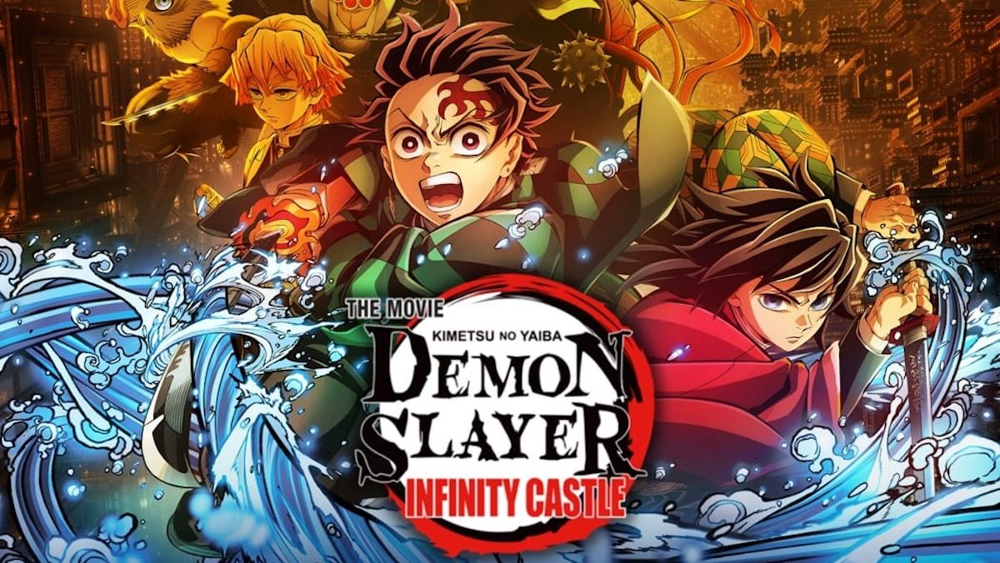
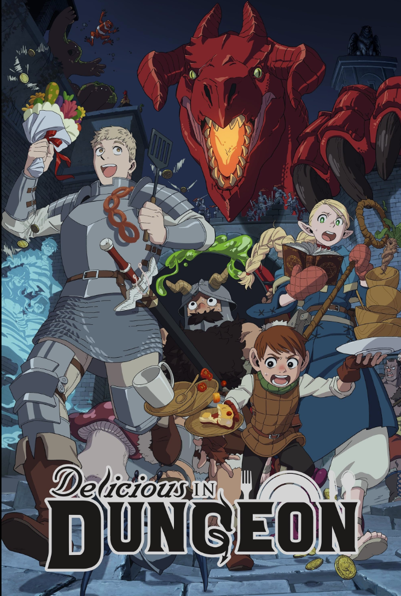
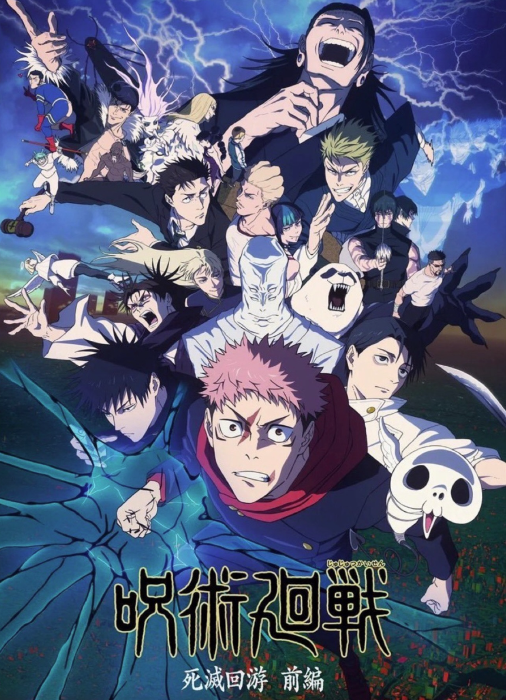

Demon Slayer is an anime set in a fantasy world in which there are demons which have similar characteristics to vampires, eating human flesh and drinking their blood. The story focuses on Tanjiro Kamado and his little sister Nezuko(who has turned into demon) Some of the main supporting characters are the Hashiras, Zenitsu, and Inosuke. To give some context, there are groups of demon slayers, which are people who fight demons to protect others, the way they do this is mainly by using different breathing styles, which are different styles of breathing techniques. The main ones are water, flame, wind, stone, and thunder, which all derive from sun breathing. Currently, there are 2 seasons and 4 movies(3 of which can also be watched as seasons), the most recent movie being a couple months ago(which I sadly missed it when it was in theaters, although I heard it was really good)

Dungeon Meshi is also a fantasy comedy anime set in a world where the people explore and raid dungeons, fighting mythical creatures. If someone dies, they can be revived unless they're digested. This anime focuses in on a group of adventurers, Laios, Falin, Marcille, and Chilchuck. In one of their explorations in a dungeon, Laios is nearly eaten by a red dragon, when he is pushed out of the way by Falin(who is also his younger sister). When they're revived they realize they must get to her before she is fully digested and cannot be revived. When they begin traveling through the dungeon, the party realizes they don't have funds for food and resort to attempting to eat the creatures in the dugeon(which Laios happens to be extremely fascinated by), after a failed atempt of cooking a walking mushroom, a mysterious figure, Senshi, who has lived in the dungeon for years and has an expterise in cooking these creatures, teaches them how to cook it properly. He joins the party and they continue in the dungeon to rescue Falin. So far the anime has 1 season, with the second on in production. One of the best parts of this anime is the way they draw the food, which you can see in the gallery page

JJK is a fantasy anime in which all living beings have cursed energy, which comes from negative emotions, as most people cannot control their energy, they continue to release it, and the accumulation of this cursed energy creates Curses which are malevolent beings whose entire goal is to harm humans. Many times, this energy manifests into beasts or monsters. However, there are Jujutsu sorcerers, who know how to control their cursed energy, and can use it to their advantage, this gives them different abilities/powers. There are different ranks of these sorcerers, and the higher-ranking sorcerers can use their energy to perform Cursed Technique, one of the advanced one's being Domain Expansion, this can be unique to the individual or it can be inherited. These domain's are similar to portals, when the sorcerer enters the portal, the user has increased power and they get a guaranteed hit. The story focuses on Itadori Yuji, after he accidently swallows the severed finger of Ryomen Sukuna, the most renowned sorcerers, who transformed himself into a cursed being after making a deal with Kenjaku, who is another ancient sorcerer, who using his technique can impant his brain into others, making him effectively immortal, living through other people's bodies. There are also many main supporting characters, such as Nobara Kugisaki, Megumi Fushiguro, and Satoru Gojo(the strongest sorcerer of modern times)